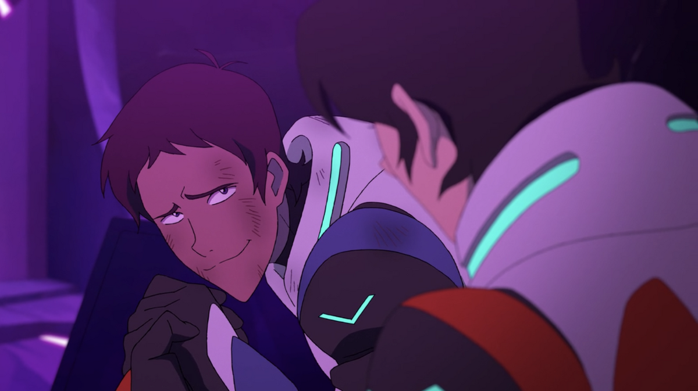
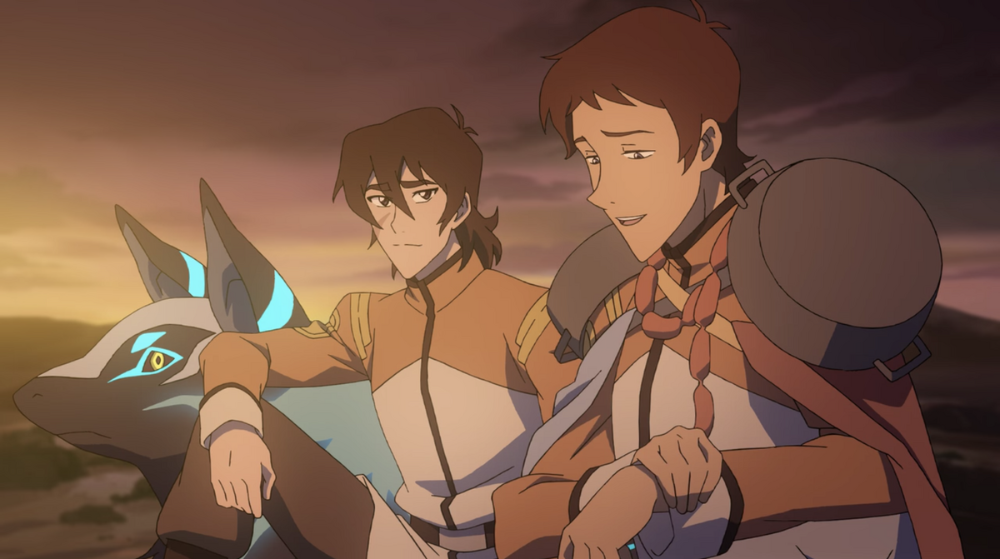
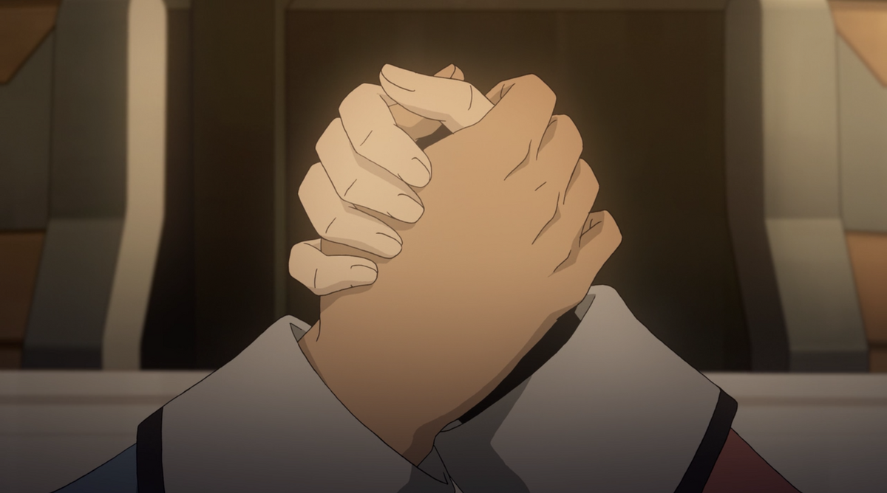

Klance (Keith and Lance from VLD) somehow managed to rewrite my brain chemistry because its been like 5 years and they're still my favourite ship. They literally kickstarted my fanfiction addiction at age 13-14. There were other ships I was interested in reading but once you get started with klance fanfiction you will be stuck in klance hell for the rest of your life.
They have the typical rivals-to-friends dynamic with Lance viewing Keith as someone to become better than and Keith not remembering who Lance is from their Garrison days. Once they're in space, the rivalry truly flourishes and they are always competing against each other. They don't hate each other but they sure as hell don't like each other. But as time goes on, being in forced proximity constantly and having to get along for literally the sake of the entire universe their rivalry turns more into just poking fun at each other and beginning an actual friendship.
The compliment each other so well. They are the definition of opposites attract. Keith is impulsive and rushes into things while Lance is more level headed and thinks things through. They balance out each other, they reassure each other. They turned a rivalry between them into a healthy competition and it's just so nice to watch play out.
If I were to go through the entire show and point out everytime they are obviously gay for each other, this page would go on forever so I'm just gonna talk about the Iconic Moments. If you want more go read the Klible.
The bonding moment changed lives. After a battle where Lance got pretty injured, Keith goes to help him up but ends up kneeling next to Lance. You do not look at your "rival" in purple lighting (a mix between you and your bros colours), gaze longingly into each others eyes, both smiling, and hold hands for an extended period of time, and then off screen get cradled in the others arms as you're carried off to safety. There is no heterosexual explanation for that shit. I'm still waiting and I have not heard a single plausible reason. They are gay.


Once Lance wakes up from being in a healing pod due to his injuries, Lance claims he doesn't remember The Bonding Moment TM and Keith is so distraught over this it's the funniest thing ever. The pain in his eyes. And this was still in season 1 like they just get gayer.

Cut to season 6. Long story short: Keith ends up on a space whale with his alien mum for 2 years while it was only a few months for everyone else cause time weird due to vortex. When Keith got back Lance went to go give Keith. OKAY NO FIRST OF ALL WHEN KEITHS TRANSMISSION WENT THROUGH TO THE CASTLE LANCE IS STARING GOBSMACKED FOR 6 WHOLE SECONDS. I COUNTED. BEFORE SAYING "DOES HE LOOK BIGGER TO YOU GUYS" SIR YOU ARE A HOMOSEXUAL. IT CRACKS ME UP EVERY SINGLE TIME. YOU DONT SEE YOUR FRIEND FOR AGES AND THE FIRST THING YOU COMMENT ON IS HIS APPEARANCE. So when Keith lands in the castle, Lance goes to give him a hug and when Keith says "not now Lance" cause he's busy, Lance looks so sad and is just standing there with his arms open.
Voltron has like 3-4 episodes where the characters just do stupid shit and they are the best episodes hands down. One of those takes place on a roadtrip back to Earth where everyone has a collective dream that they are on a gameshow with a dude named Bob. At the end of the gameshow everyone has to vote on the person they want to go free. Lance votes for Keith. Keith votes for Lance. For two very different reasons but its still boyfriend behaviour so I will continue on with my shipping goggles.
I'd like to shout out ponytail Keith from this episode real quick.

Lance chose Keith because, in his words, "I think he's like the future" and he says this with one of the fondest expressions to exist? Okay. Also look at Hunk and Pidge's reactions to Lance's answer. Hunk looks midly concerned and Pidge is just confused out of their fucking mind.

And then Keith chimes in with his answer of Lance. And Bob's like why Lance. And Keith just says he doesn't want to spend an eternity with Lance while having the most Keith expression which is just :skull: They were each other's first choice <3
So Lance ends up dating Allura which is fine -_- but before he goes on a date with her, he and Keith have a little heart-to-heart on the top of the black lion. "Man, you can be a real hard guy to find when you wanna be" implies he was looking for keith specifically.. okay.... Allurance blah blah blah no one cares. Keith then gives Lance a pep talk talking about how brilliant he is and i just :crying-guy: fond-ass mfs That scene alone had more romantic tension than anything Allura and Lance had and they've kissed /several/ times.

The joined hands in season 8 and it was very cute.

TL;DR They created romance. I don't make the rules. They could've had the best rivals-to-friends-to-lovers arc ever but we were robbed. Allurance was a cop out. If they wanted to do Allurance from the beginning they would've developed their relationship better instead of just creating it out of thin air. One sided attraction is not enough to be relationship development. Keith and Lance look at each other with the their fond-ass expressions and you're telling me they aren't hopelessly in love with each other? They are dating, they are husbands, they are soulmates. Discussion over.